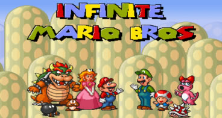
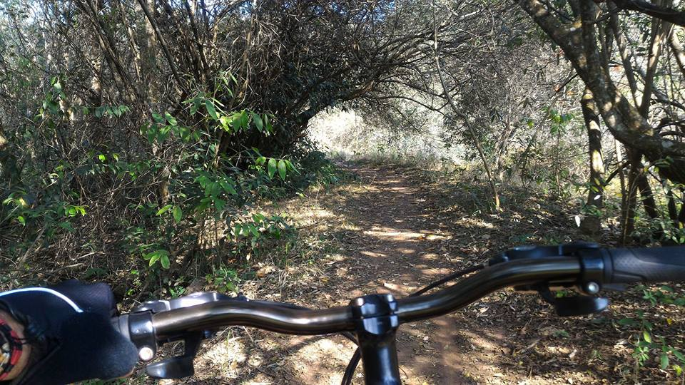
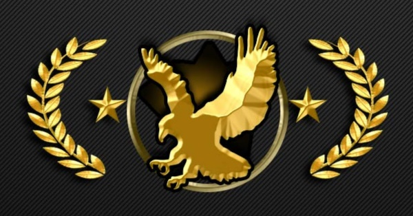

rigem
O processo de aprovação no vestibular foi um de seus mais complexos objetivos, sendo necessário um ano de cursinho para que conseguisse decorar toda a informação requisitada e alcançar a pontuação exigida pela universidade.
O processo de aprovação no vestibular foi um de seus mais complexos objetivos, sendo necessário um ano de cursinho para que conseguisse decorar toda a informação requisitada e alcançar a pontuação exigida pela universidade.
Como membro do grupo adquiriu experiências muito importantes, não somente profissionais mas também pessoais, todos os membros do grupo devem possuir um conhecimento pelo menos básico de todas as áreas de atuação no grupo, seja para soldar uma placa para os circuitos dos robos, um pedaço do robo em si ou a programação responsavel por sua inteligência artificial. Por aprendizados pessoais, pode-se listar trabalho em equipe, principalmente por se tratar de um projeto gigante, que envolve não apenas uma equipe de pessoas, mas diversas equipes, responsáveis por diferentes partes do todo; difusão de experiências, por conta dos diferentes membros do grupo, pessoas que já estão no último ano de curso ou até mesmo já no mestrado e doutorado, são passadas experiências e informações sobre a vida acadêmica que levariam anos para serem descobertos por conta própria.
Saiu do grupo por conta de um convite para fazer parte de uma iniciação científica na área de Geração Procedural de Conteúdo, com o professor do ICMC Claudio Toledo, participando do projeto por um período de 8 meses, onde chegou a conquistar uma bolsa CNPq com o seguinte projeto.
 A iniciação científica tinha como objetivo desenvolver tecnologias de geração procedural de conteúdo voltada a geração de níveis em jogos, tive como treinamento o desenvolvimento de uma espécie de Infinity Mario Bros, em que a cada inicialização do jogo um nível completamente novo era gerado, no entando o projeto principal baseia-se no desenvolvimento de um jogo no estilo Zelda, que seja totalmente gerado proceduralmente, tanto a parte de arte, níveis, músicas e inteligência artificial. Optou por separar-se de grupo por conta de seu recém-descoberto distânciamento em relação à parte academica.
Os códigos eram trabalhados totalmente em linguagem Java, com direito a aprendizado de técnicas e maracutaias que provavelmente jamais teriam sido vistas caso não tivesse sido parte desse projeto, podendo mencionar a própria geração procedural de conteúdo em sí.
Os Hobbies variam bastante, de esportes ao ar-livre a E-Sports, dependendo a situação fisico-climática do indivíduo e da região.
 De início, podemos citar Montain Bike, amador ainda no assunto, no entanto é seu esporte favorito, não apenas fazendo trilhas, mas também andando de bike pela cidade. A bicicleta foi montada peça a peça, demorando cerca de 5 meses até que estivesse pronta para uso, hoje com 4 anos de vida. Atualmente costuma fazer circuitos que envolvem sair da saída da matemática da USP e ir até a UFSCAR, com possibilidade de trilhas no cerrado.
Quando ainda morava em São Paulo, seus circuitos baseavam-se principalmente na ciclofaixa do rio Tietê, onde saindo da zona sul, adentra-se na ciclofaixa na estação de trem Jurubatuba e saía para o trecho de cidade na estação Vila Olimpia, seguindo o caminho até o parque Ibirapuera.
 Passando para o lado virtual, temos como jogo favorito o famigerado Counter-Strike: Global Offensive, onde hoje encontra-se na patente Aguia 2 no rankeamento do competitivo do jogo. Sendo o cs-go sua principal válvula de escape para o fim de um dia corrido.
Encontra-se online pelo nome de itsMaracutaia, está acostumado a jogar em todos os mapas oficiais do competitivo. Mesmo com cerca de 800 horas de jogo, ainda tem muito o que aprender, sendo este um dos motivos pelos quais ainda joga csgo, mesmo após 3 anos desde sua compra.
Além desses esportes, também curte nadar, vôlei, futebol (é roroso), basquete, basicamente tudo para o que for chamado irá topar. No quesito E-sports, FPS's são sua categoria favorita, mas também curte jogos como Battlerite, além disso, é claro, não podemos esquecer das festas (#RaçaCAASO), tenta sempre que possível estar envolvido com as manifestações estudantis pelo amor ao próximo.